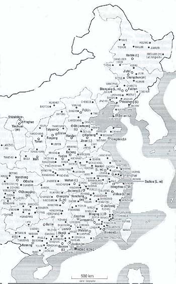
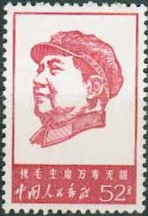
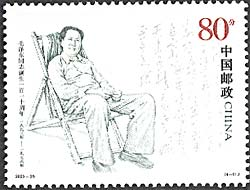
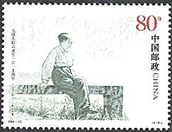
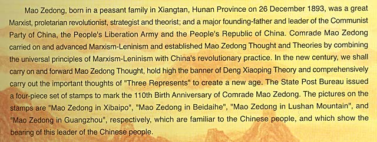
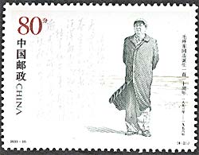
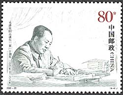

Communism is not love. Communism is
a hammer which we use to crush the enemyMao Zedong
The Laogai, the China's hidden Gulag, is the vast labor reform system in the People's Republic of China (PRC). The Laogai was created by the Chinese Communist Party (CCP) under Mao Zedong, yet it still serves the one-party dictatorship as the primary instrument for detaining political dissidents and penal criminals. The two major aims of the Laogai are to use all prisoners as a source of cheap labor for the communist regime and to "reform criminals" through hard labor and compulsory political indoctrination.. The precise population and the number of camps in the Laogai are considered state secrets, so it is impossible to know with certainty how many inmates are imprisoned in the Laogai or how many camps exist. Additionally, camps often close or change their location depending on economic benefits, making it more difficult to track the number of camps inside China.
Please take a look at the map shown below, that was compiled by a former Laogai prisoner, the European Jean Pasqualini (Bao Ruo-wang). Each point on this map (please consider that many of the roughly 1000 Laogai places are missing from this map) represented a work camp or a point of detention. In most of cases these points were never mentioned in the works or researches dedicated to the PRC.
|
 |
 |
 |
Counting those imprisoned (those found in detention centers weren't counted, as their number is the most variable and therefore difficult to ascertain), the Laogai Research Foundation estimates that the Laogai population is permanently between 4 to 6 million prisoners. Since the inception of the Laogai, between 40 to 50 million people have been imprisoned, and millions of them died in detention. Quite everyone in China is related to someone or has known someone who has been forced to serve a lengthy sentence in the confines of the Laogai.
Contrary to CCP propaganda, the essential nature of the Chinese Communists Laogai system is different than that of prison systems in other countries. Its purpose is fundamentally different in that the Laogai does not exist simply to punish criminals in accordance with the law, but also and especially to further strengthen the rule of the Communist Party by suppressing any signs of dissent among the Chinese people and attempting to reform inmates into productive, socialist citizens. Even more, the Laogai functions as an integral part of the Chinese economy, providing an endless source of cost-free labor. (Sources: http://www.laogai.org/en/aboutlg.html#_What_is_the_1 and Le livre noir du communisme, by S. Courtois and collaborators).
 |
 |
For these reasons there is no wonder that the today's PRC continues to venerate the criminal who initiated the Laogai und under whose rule the Laogai was extended to unimaginable proportions. We present here four stamps, that were issued in 2003, and that commemorate the "110th Birth Anniversary of Comrade Mao Zedong."

The above excerpt is taken from the "Chinese Stamps 2003", a beautifully issued book that contains some very nice stamps, but also the four images of this butcher, who thanks to his legendary "efficiency" can be surely considered the bloodiest one in the long history of humanity.
|
 |
 |
We learn from this Stamp Book that "in the new century we shell carry on and forward Mao Zedong Thought", as if his crimes, perpetrated during the whole second half of the 20th century, weren't more than sufficient. The time came for the real criminals (as opposed to those who were forced to confess non-existing crimes) and for their followers to admit their past and present crimes, and to quickly disappear in the trash of the history.
Related links on this site:
|
|
Created:
02/20/04.
Revised: 1/10/2024.
|